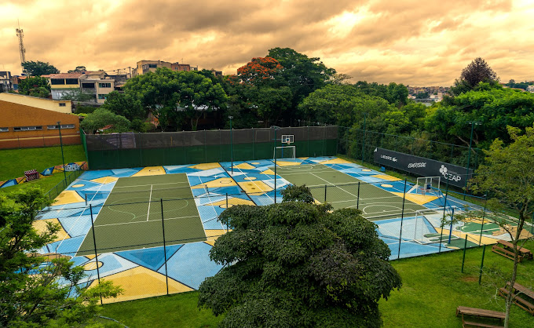
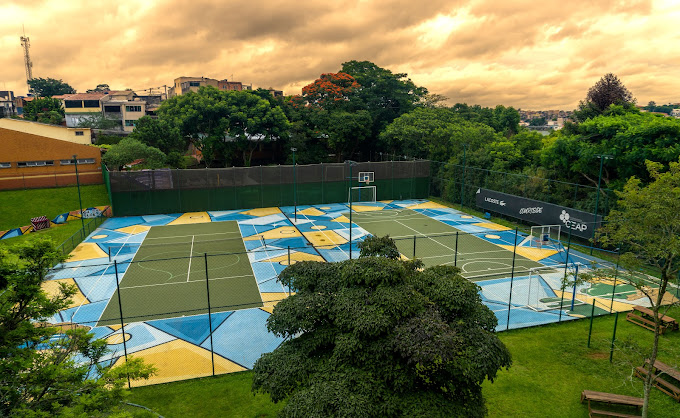

O CEAP – Centro Educacional Assistencial Profissionalizante – é uma organização não governamental, sem fins lucrativos, fundada em 1985, que atua no modelo de escola profissionalizante gratuita, e oferece anualmente cursos de formação e qualificação profissional para 1.100 jovens entre 10 e 18 anos que no contraturno estejam matriculados no ensino regular.
Além da formação técnica-profissional, o CEAP preocupa-se com a Formação Humana dos atendidos, desenvolvendo ao longo desses 37 anos uma metodologia com dois principais pilares: a educação personalizada, reconhecendo cada beneficiário como um ser único e especial, e o envolvimento familiar no processo de formação de cada indivíduo.
Desde a sua fundação, o CEAP já atendeu mais de 8.000 jovens em situação de alta vulnerabilidade social. Hoje, a maioria desses beneficiários encontram-se em grandes empresas, desenvolvendo um excelente trabalho profissional.
Atualmente, a organização possui uma área de 23 mil m² e está inserida em uma comunidade na zona sul de São Paulo, no distrito de Pedreira. Este ocupa a 81º posição no IDH – Índice de Desenvolvimento Humano – entre os 96 distritos da cidade de São Paulo, segundo o IBGE.
Desde a sua fundação, o CEAP já atendeu mais de 8.000 jovens em situação de alta vulnerabilidade social O CEAP conta com um serviço de capelania a cargo da Prelazia do Opus Dei, instituição da Igreja Católica fundada por São Josemaria Escrivá.
Em 1985, um grupo de universitários que frequentavam a politécnica da USP (Universidade de São Paulo), foram unidos pelo desejo em comum de fazer a diferença no mundo. Esse desejo de estar onde mais se precisava de ajuda, levou o grupo de jovens ao extremo sul de São Paulo, no bairro de Pedreira, região com um dos piores Índices de Desenvolvimento Humano da cidade de São Paulo, conforme constatado em pesquisa. Na Pedreira, bairro com alto índice de criminalidade, analfabetismo, com pouco saneamento básico e acesso a recursos limitados, ali, onde inicialmente era um aterro clandestino, e que foi cedido pela prefeitura, nascia o que no futuro seria chamado de CEAP.
Alinhado ao mercado que mais crescia e carecia de mão de obra na época, ao interesse dos moradores locais e a necessidade de se democratizar o acesso a tecnologia, o primeiro curso desenvolvido na organização, composta então apenas por uma construção rústica de madeira, com uma única sala de aula e escritório administrativo, foi o curso Rádio e Televisão com uma turma de oito alunos.
Além da formação técnica, que era e é até hoje o caminho que o CEAP utiliza para proporcionar aos seus beneficiários acesso a melhores condições, o grupo de universitários pautou o que é até hoje o pilar da metodologia desenvolvida dentro da organização, a formação humana. Vital e necessária para que os jovens beneficiados pelo projeto não só tenham acesso ao mercado de trabalho, se tornando bons profissionais, mas acima de tudo essencial para que se formem como excelentes pessoas, capazes de transformar a sua comunidade e o mundo através do exemplo ético e de um trabalho realizado em prol do outro e da sociedade.
Com o passar dos anos, novos cursos foram desenvolvidos, atraindo um número cada vez maior de jovens, mais pessoas se engajaram à causa realizando contribuições para que todo o projeto fosse capaz de sair do papel (muitos, inclusive, contribuem até hoje com a organização). Antigos alunos se tornaram profissionais da organização, pais abraçaram o CEAP e se tornaram voluntários. O CEAP começava a crescer e atingir mais jovens da região, abrangendo assim um maior território, começando a executar o que viria a ser a visão da organização, ser uma instituição catalisadora do desenvolvimento humano.
Com o planejamento, uma estratégia sólida e um maior número de voluntários e alunos, foi criado em 1992 a primeira Feira de Inovação e Ciências , hoje na sua 30ª edição conhecida como FeCEAP. Evento que leva à comunidade local entretenimento e conhecimento técnico sobre diversos campos, além de proporcionar aos jovens oportunidade de crescimento humano e profissional.
O CEAP demorou exatos 22 anos para ter sua estrutura de 10 mil m² de construção finalizada, em um terreno de 23 mil m² de área total.
Hoje o que era um sonho de alguns jovens se torna uma realidade crescente, atendendo mais de 8 mil jovens e suas famílias. Mas a história não termina aqui, ela continua e terá muito mais o que contar ao longo do tempo, dando muita alegria e formação de qualidade a muitas outras pessoas, criando condições para a formação de cidadãos íntegros, capazes de transformar o mundo. Essa história vai muito além…